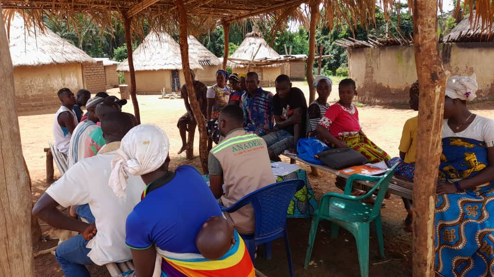
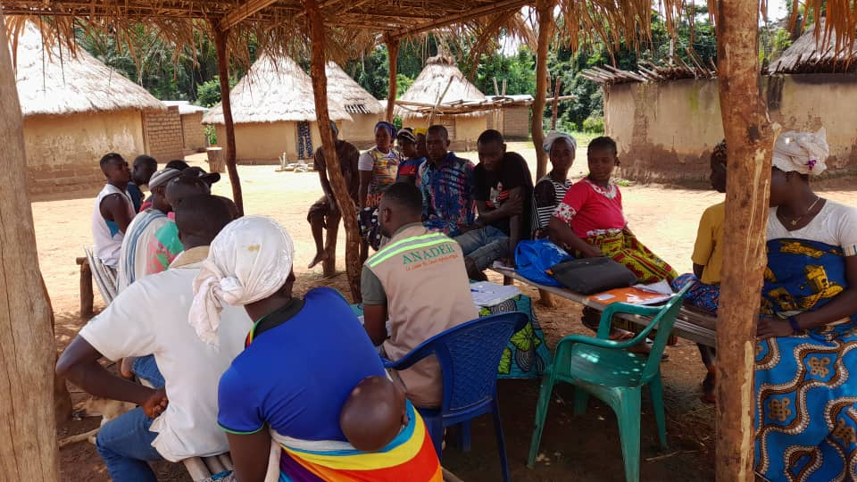

Parcelle semencière — Projet riz
Création parcelle semencière (8.5 ha). CBSS / Ministère de l'agriculture
Fort de 30 années d'une carrière entièrement dédiée à l'économie rurale et au développement, Dr. Miaman KONE . C'est un homme de terrain, un architecte de projets qui sait traduire les besoins des populations en solutions durables. Avec plus de 300 missions réussies à son actif en Côte d'Ivoire et dans la sous-région, son expertise est reconnue, que ce soit pour l'analyse des chaînes de valeur agricoles, l'audit de projets ou le montage de dossiers complexes. Il a fait le choix de mettre cette vaste expérience au service de sa région d'origine, le Bafing, en tant que Président de l'Organisation Agricole YEYA.
"Poursuivre l'excellence au service du monde rural."
YEYA (« Espoir ») accompagne la production vivrière, la promotion du sésame et l’autonomisation rurale dans plus de 200 villages du Bafing.
Maison du Paysan à Foungbesso
Motos, matériel de bureau, équipes terrain
L’initiative J’aime mon village a été lancée par Dr Miaman Koné dans la région du Bafing, inspirée du concept de développement des villages en Corée du Sud, initié par leur président. Cette démarche vise à mobiliser toutes les forces vives pour le progrès local.
Pour fédérer les énergies, une plateforme WhatsApp a été créée, réunissant plus de 400 membres : cadres, villageois, membres de la diaspora. Chacun y partage ses idées, ses projets et ses actions pour le développement du village, dans un esprit de solidarité et d’innovation.
À travers cette initiative, Dr Miaman Koné met en avant ses projets et son attachement profond à sa terre natale, convaincu que l’amour du village est le moteur du développement durable.
Création parcelle semencière (8.5 ha). CBSS / Ministère de l'agriculture
Promotion de la culture de sésame et production de soja-bio, UFAB & privés
Alphabétisation, épargne, comités villageois.
Gestion documentaire administrative (actes, etc.).
Médiation et résolution des conflits.
Mise en place des plans de developpement pour les localités villageois.
Sodiako Tour est une initiative majeure menée dans la région du Bafing en Côte d'Ivoire. Ce projet a permis d'établir des règlements intérieurs pour 100 groupements agricoles répartis dans toute la région. Grâce à cette démarche, chaque groupement dispose désormais d'une identité propre, d'un cadre de fonctionnement clair et de règles adaptées à ses besoins.
L'objectif principal de Sodiako Tour est de renforcer la cohésion, la transparence et l'efficacité des groupements, tout en favorisant leur reconnaissance officielle auprès des partenaires et institutions. Les équipes ont sillonné les villages pour accompagner les membres dans la rédaction, la validation et l'adoption de ces règlements, garantissant ainsi une gestion participative et durable.
Ce projet marque une étape essentielle pour l'autonomisation des acteurs ruraux du Bafing et ouvre de nouvelles perspectives pour le développement local.
Offrir à la région du Bafing un avenir durable, prospère et solidaire, où chaque village bénéficie d’une agriculture innovante, d’une éducation accessible, d’un environnement préservé et d’une cohésion sociale renforcée.
MK s’engage à faire du Bafing un modèle d’espoir, de progrès et d’autonomie pour les générations futures.
Président du Conseil d'Administration
Direction Exécutive
Equipe terrain et formateurs
Pour partenariat, financement ou informations terrain, notre équipe est à votre écoute. Nous vous répondrons dans les plus brefs délais.
 
